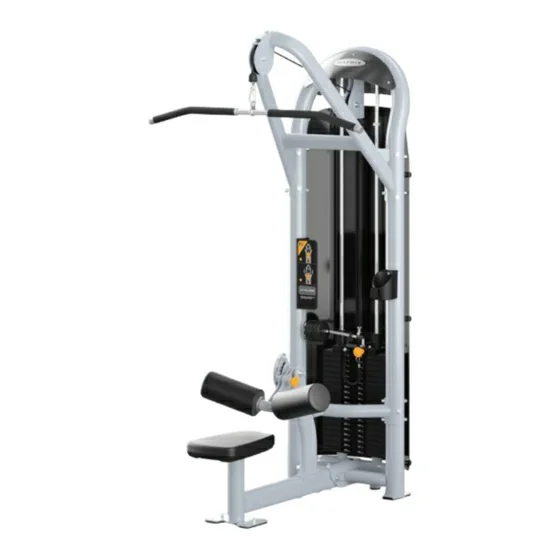

ATLAS PESSOAL DE TREINAMENTO
Movimento.
Força. Técnica.
Equipamentos, séries e exercícios organizados para consulta rápida.

NÚCLEO 1 · EQUIPAMENTOS DE ACADEMIA · 19 APARELHOS
Conheça o aparelho.
Entenda o movimento.
Catálogo técnico construído a partir dos equipamentos identificados em campo e dos respectivos manuais. Consulte função, biomecânica e documentação incorporada ao site.
19 fichas confirmadas
Nenhum aparelho corresponde à busca.
NÚCLEO 2 · SÉRIES DA ACADEMIA
Duas propostas de revezamento
Proposta A/B · quatro dias
| Série | Código | Exercício | Dosagem | Sequência |
|---|---|---|---|---|
| A | G7-S13 | Supino sentado | 3×8–12 | 1 |
| A | G7-S22 | Voador | 3×10–15 | 2 |
| A | G7-S23 | Desenvolvimento | 3×8–12 | 3 |
| A | G7-S71 | Extensora | 3×10–15 | 4 |
| A | G7-S70 | Leg press + panturrilha | 3×8–12 + 3×12–20 | 5–6 |
| B | G3-S30-03 | Puxada pronada/supinada | 3×8–12 cada | 1–2 |
| B | G7-S34 | Remada sentada | 3×8–12 | 3 |
| B | G7-S40 | Bíceps | 3×10–12 | 4 |
| B | G3-MS52 | Tríceps | 3×10–12 | 5 |
| B | G7-S72 / G7-S73 | Flexoras | 3×10–15 | 6–7 |
| B | G3-S52 | Extensor lombar | 3×10–15 | 8 |
Proposta A/B/C · três estímulos
| Série | Equipamentos principais | Dosagem-base | Ordem |
|---|---|---|---|
| A · Empurrar | G7-S13, G7-S22, G7-S23, G3-MS52, G7-S51 | 3×8–12; abdominal 3×12–20 | Peito → ombros → tríceps → abdômen |
| B · Pernas | G7-S70, MG-PL70, G7-S71, G7-S72, G7-S73, G7-S74, G7-S75 | 3×8–12; panturrilha 3×12–20 | Compostos → isolamentos |
| C · Puxar/posterior | G3-S30-03, G7-S34, G7-S40, G3-S52, G3-MS24 | 3×8–12; lombar 3×10–15 | Costas → braços → lombar |
Sequência técnica: aquecimento geral → exercícios multiarticulares maiores → máquinas de isolamento → abdominal ou panturrilha → registro de carga, repetições e percepção de esforço. As repetições são ponto de partida e serão ajustadas após observar sua execução e recuperação.
NÚCLEO 3 · SÉRIE DOMÉSTICA
Casa · halteres e peso corporal
Abdominais, prancha, flexões, agachamentos, avanços, exercícios com halteres e movimentos de fortalecimento geral.
NÚCLEO 4 · CALISTENIA DOMÉSTICA
Barra e controle corporal
A barra fixada a 2,20 m permitirá progressões de suspensão, sustentação, elevação de joelhos e, gradualmente, puxadas e variações de força. Remada invertida é outro exercício: o corpo fica inclinado sob uma barra mais baixa, os pés apoiados no chão e você puxa o peito até a barra. Se a sua barra é somente alta, não vamos considerar esse movimento por enquanto.
CRITÉRIO DOCUMENTAL
O que significa “confirmado”
01 · Identificação
O código do modelo observado no equipamento foi associado à documentação correspondente.
02 · Fonte técnica
Nome, imagem, função e regulagens foram conferidos nos manuais e materiais técnicos da Matrix.
03 · Limite
A ficha descreve o modelo identificado; ajustes individuais e dor exigem orientação presencial de profissional habilitado.